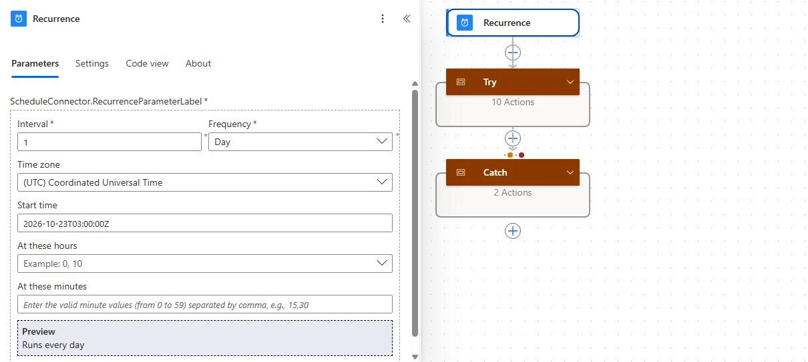
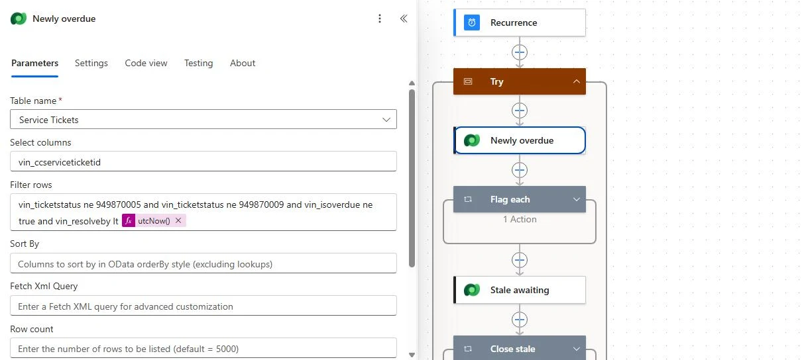
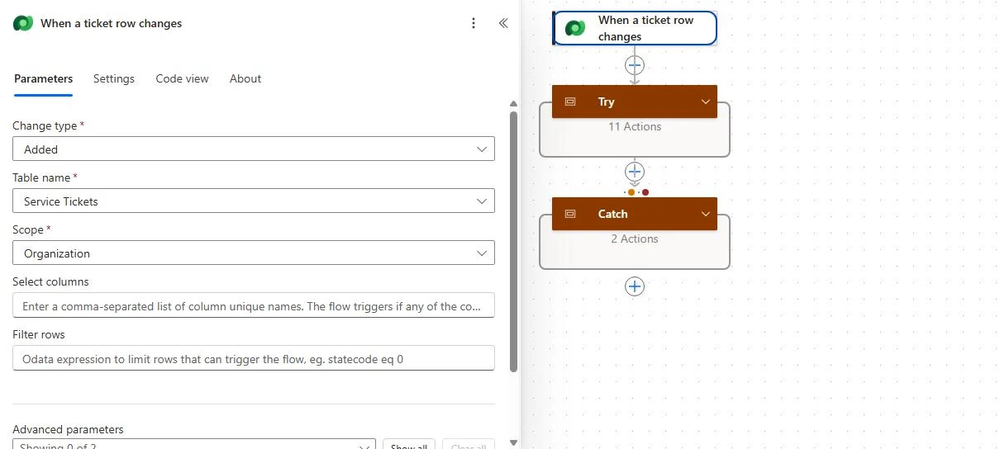
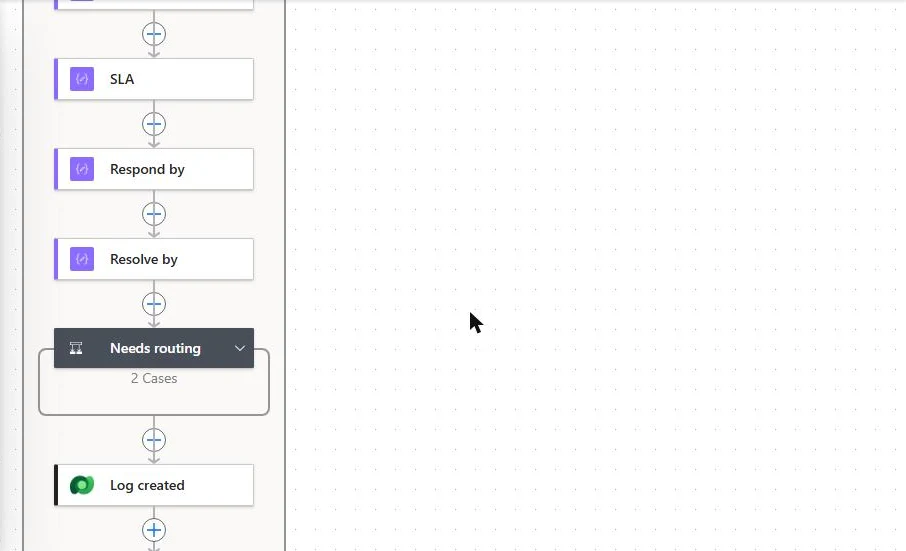
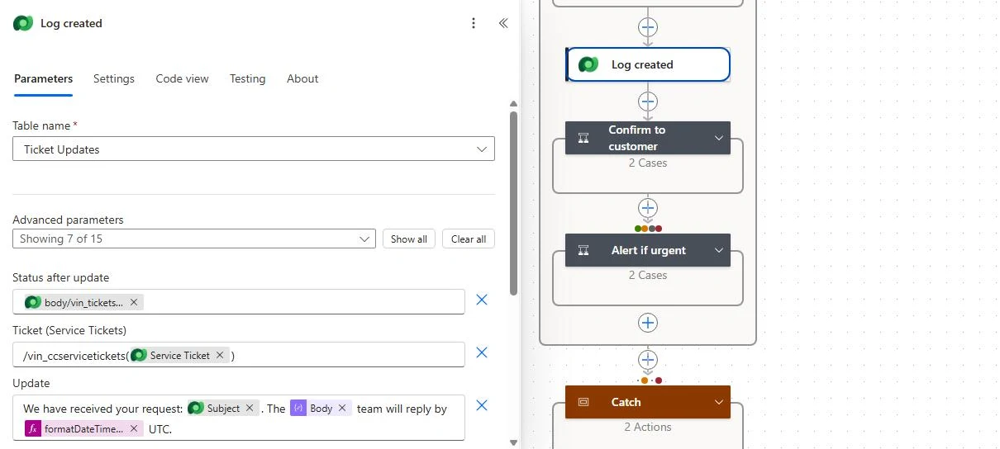
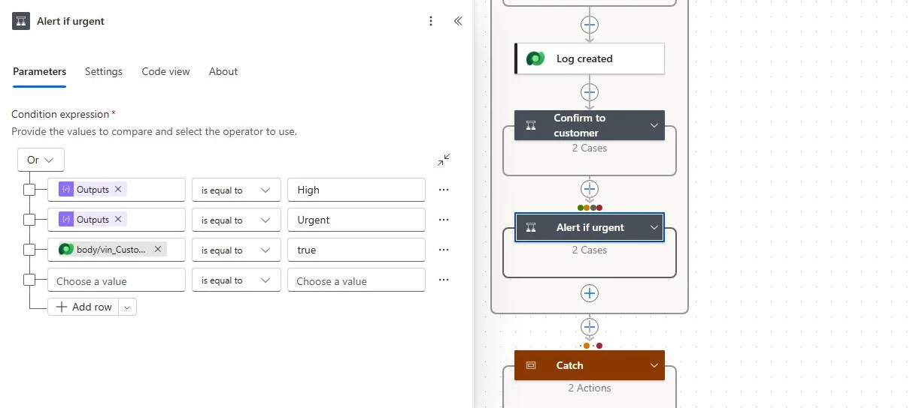
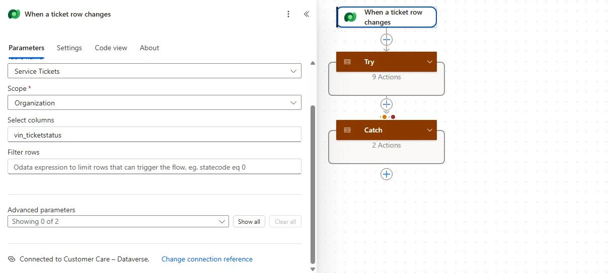
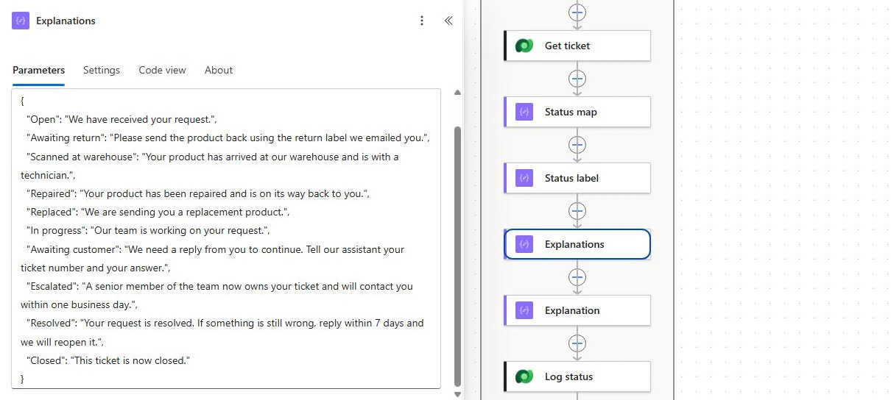
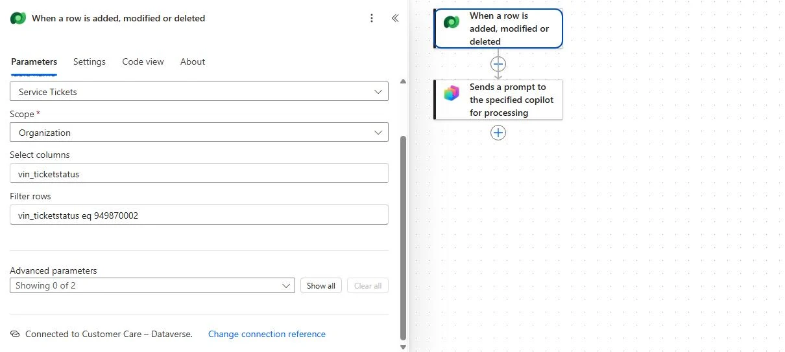
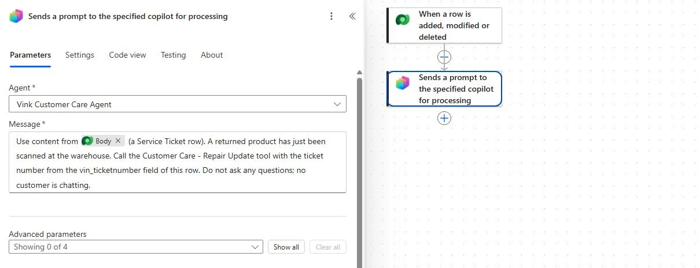

- Technical specification
- Vink Customer Care Agent · Part 5 of 9
5 · Background flows and the event trigger
These flows run without a chat. Two start from Dataverse row changes on Service Ticket, one runs on a schedule, and one is the agent's event trigger that sends a message to the agent. Because the rules live on the data, they apply to every ticket, whether the agent, a staff member in Care Hub or an import created it.
| Flow | Starts when | Does |
|---|---|---|
| Ticket Created | A Service Ticket row is added | Fills team and SLA if missing, writes the Ticket created timeline row, emails the customer, alerts support for High/Urgent/VIP |
| Ticket Status Changed | vin_ticketstatus changes (Select columns filter) | Explains the new status, writes a timeline row and latest update, emails the customer, stamps Resolved on |
| Daily SLA Check | Every day at 03:00 UTC | Flags overdue tickets, closes stale ones, emails an HTML overdue report |
| Warehouse scan received | Status changes to Scanned at warehouse (949870002) | Sends the ticket to the agent, which calls Repair Update |
Event chain: from a warehouse scan to the customer email
One status change, two customer updates
Staff set status = Scanned at warehouse
Ticket Status Changed
Email: product arrived
Warehouse scan received
ExecuteCopilot → agent
Agent calls Repair Update
Status → Repaired / Replaced
Ticket Status Changed fires again: on its way back to you
When a row is added, modified or deleted (Dataverse)
Change type: Modified
Table: vin_ccserviceticket
Scope: Organization
Select columns: vin_ticketstatus
Filter rows: vin_ticketstatus eq 949870002 (Scanned at warehouse)Sends a prompt to the specified copilot for processing
Copilot: vin_CustomerCareAgent
Message: Use content from @{triggerBody()} (a Service Ticket row). A returned product
has just been scanned at the warehouse. Call the Customer Care - Repair Update
tool with the ticket number from the vin_ticketnumber field of this row.
Do not ask any questions; no customer is chatting.Daily SLA Check
- Trigger
- Recurrence
{"frequency": "Day", "interval": 1, "timeZone": "UTC", "startTime": "2026-10-23T03:00:00Z"} - Tool description
- — (not a tool)
- Inputs
- —
- Outputs (Respond to the agent)
- —
- Tables
- Service Ticket (R/W)
- Called by
- Dataverse / schedule
- Actions
- 18
- Source
src/Workflows/CustomerCare-DailySLACheck-81BF25FC-F6CD-F111-A05A-6045BD565BD6.json


All 18 actions with expressions from source
| # | Action | Type | Key settings and expressions |
|---|---|---|---|
| 1 | Try | Scope | — |
| 2 | ↳ Newly overdueinside Try | Dataverse · List rows | Table Service Ticket $select vin_ccserviceticketid$filter vin_ticketstatus ne 949870005 and vin_ticketstatus ne 949870009 and vin_isoverdue ne true and vin_resolveby lt @{utcNow()} |
| 3 | ↳ Flag eachinside Try | Apply to each | For each @outputs('Newly_overdue')?['body/value'] |
| 4 | ↳ Flag overdueinside Flag each | Dataverse · Update a row | Table Service Ticket recordId @items('Flag_each')?['vin_ccserviceticketid']vin_isoverdue true |
| 5 | ↳ Stale awaitinginside Try | Dataverse · List rows | Table Service Ticket $select vin_ccserviceticketid$filter vin_ticketstatus eq 949870007 and modifiedon lt @{addDays(utcNow(),-7)} |
| 6 | ↳ Close staleinside Try | Apply to each | For each @outputs('Stale_awaiting')?['body/value'] |
| 7 | ↳ Close no replyinside Close stale | Dataverse · Update a row | Table Service Ticket recordId @items('Close_stale')?['vin_ccserviceticketid']vin_latestupdate Closed because we did not hear back from you for 7 days. Raise a new ticket any time if you still need help.vin_ticketstatus 949870005 |
| 8 | ↳ Old resolvedinside Try | Dataverse · List rows | Table Service Ticket $select vin_ccserviceticketid$filter vin_ticketstatus eq 949870009 and vin_resolvedon lt @{addDays(utcNow(),-7)} |
| 9 | ↳ Close resolvedinside Try | Apply to each | For each @outputs('Old_resolved')?['body/value'] |
| 10 | ↳ Close after resolveinside Close resolved | Dataverse · Update a row | Table Service Ticket recordId @items('Close_resolved')?['vin_ccserviceticketid']vin_latestupdate Closed 7 days after it was resolved.vin_ticketstatus 949870005 |
| 11 | ↳ All overdueinside Try | Dataverse · List rows | Table Service Ticket $select vin_ticketnumber,vin_subject,vin_priority,vin_ticketstatus,vin_resolveby$filter vin_ticketstatus ne 949870005 and vin_ticketstatus ne 949870009 and vin_isoverdue eq true$orderby vin_resolveby asc$expand vin_SupportTeam($select=vin_name),vin_Customer($select=fullname) |
| 12 | ↳ Rowsinside Try | Select | From @outputs('All_overdue')?['body/value']Map {"Ticket": "@item()?['vin_ticketnumber']", "Customer": "@item()?['vin_Customer']?['fullname']", "Subject": "@item()?['vin_subject']", "Priority": "@item()?['vin_priority@OData.Community.Display.V1.FormattedValue']", "Status": "@item()?['vin_ticketstatus@OData.Community.Display.V1.FormattedValue']", "Team": "@item()?['… |
| 13 | ↳ Tableinside Try | Create HTML table | From @body('Rows')Format HTML |
| 14 | ↳ Any overdueinside Try | Condition | Condition {"and": [{"greater": ["@length(body('Rows'))", 0]}]} |
| 15 | ↳ Send reportinside Any overdue · yes | Outlook · Send an email (V2) | To @{parameters('CC Support Mailbox (vin_CCSupportMailbox)')}Subject Daily SLA report: @{length(body('Rows'))} overdue ticket(s)Body <div style="font-family:Segoe UI,Arial,sans-serif;max-width:600px;margin:auto;border:1px solid #e1e4e8;border-radius:8px;overflow:hidden"><div style="background:#0b5cad;color:#ffffff;padding:16px 24px;font-size:18px;font-weight:600">Vink Electronics Customer Care</div><div style="padding:20px 24px;color:#1f2328;font-s…Importance Normal |
| 16 | Catch | Scope | Run after Try (Failed/TimedOut) |
| 17 | ↳ Alert failureinside Catch | Outlook · Send an email (V2) | To @{parameters('CC Support Mailbox (vin_CCSupportMailbox)')}Subject Flow failed: Customer Care – Daily SLA CheckBody <div style="font-family:Segoe UI,Arial,sans-serif;max-width:600px;margin:auto;border:1px solid #e1e4e8;border-radius:8px;overflow:hidden"><div style="background:#0b5cad;color:#ffffff;padding:16px 24px;font-size:18px;font-weight:600">Vink Electronics Customer Care</div><div style="padding:20px 24px;color:#1f2328;font-s…Importance Normal |
| 18 | ↳ Mark failedinside Catch | Terminate | Status Failed |
Ticket Created
- Trigger
- Dataverse: When a row is added, modified or deleted
message1
entitynamevin_ccserviceticket - Tool description
- — (not a tool)
- Inputs
- —
- Outputs (Respond to the agent)
- —
- Tables
- Service Ticket (R/T/W), Support Team (R), Ticket Update (W)
- Called by
- Dataverse / schedule
- Actions
- 21
- Source
src/Workflows/CustomerCare-TicketCreated-437CFACF-F6CD-F111-A05A-6045BD565BD6.json




All 21 actions with expressions from source
| # | Action | Type | Key settings and expressions |
|---|---|---|---|
| 1 | Try | Scope | — |
| 2 | ↳ Get ticketinside Try | Dataverse · Get a row by ID | Table Service Ticket recordId @triggerOutputs()?['body/vin_ccserviceticketid']$expand vin_SupportTeam($select=vin_name),vin_Customer($select=fullname,firstname,emailaddress1,vin_isvip) |
| 3 | ↳ Categoryinside Try | Compose | Value @coalesce(outputs('Get_ticket')?['body/vin_category@OData.Community.Display.V1.FormattedValue'],'General') |
| 4 | ↳ Team nameinside Try | Compose | Value @coalesce(outputs('Get_ticket')?['body/vin_SupportTeam']?['vin_name'],if(or(equals(outputs('Category'),'Repair'),equals(outputs('Category'),'Returns')),'Repairs',if(equals(outputs('Category'),'Billing'),'Billing','Logistics'))) |
| 5 | ↳ Priorityinside Try | Compose | Value @coalesce(outputs('Get_ticket')?['body/vin_priority@OData.Community.Display.V1.FormattedValue'],'Medium') |
| 6 | ↳ SLAinside Try | Compose | Value @json(if(equals(outputs('Priority'),'Low'),'{"v":949870000,"r":24,"s":120}',if(equals(outputs('Priority'),'Medium'),'{"v":949870001,"r":8,"s":72}',if(equals(outputs('Priority'),'High'),'{"v":949870002,"r":4,"s":24}','{"v":949870003,"r":1,"s":8}')))) |
| 7 | ↳ Respond byinside Try | Compose | Value @coalesce(outputs('Get_ticket')?['body/vin_respondby'],addHours(outputs('Get_ticket')?['body/createdon'],outputs('SLA')?['r'])) |
| 8 | ↳ Resolve byinside Try | Compose | Value @coalesce(outputs('Get_ticket')?['body/vin_resolveby'],addHours(outputs('Get_ticket')?['body/createdon'],outputs('SLA')?['s'])) |
| 9 | ↳ Needs routinginside Try | Condition | Condition {"or": [{"equals": ["@empty(outputs('Get_ticket')?['body/_vin_supportteam_value'])", true]}, {"equals": ["@empty(outputs('Get_ticket')?['body/vin_resolveby'])", true]}]} |
| 10 | ↳ Teaminside Needs routing · yes | Dataverse · List rows | Table Support Team $select vin_ccsupportteamid$filter vin_name eq '@{outputs('Team_name')}'$top 1 |
| 11 | ↳ Route and SLAinside Needs routing · yes | Dataverse · Update a row | Table Service Ticket recordId @triggerOutputs()?['body/vin_ccserviceticketid']vin_priority @outputs('SLA')?['v']vin_resolveby @{outputs('Resolve_by')}vin_respondby @{outputs('Respond_by')}vin_SupportTeam@odata.bind /vin_ccsupportteams(@{first(outputs('Team')?['body/value'])?['vin_ccsupportteamid']}) |
| 12 | ↳ Log createdinside Try | Dataverse · Add a new row | Table Ticket Update vin_statusafter @{outputs('Get_ticket')?['body/vin_ticketstatus@OData.Community.Display.V1.FormattedValue']}vin_Ticket@odata.bind /vin_ccservicetickets(@{triggerOutputs()?['body/vin_ccserviceticketid']})vin_updatetext We have received your request: @{outputs('Get_ticket')?['body/vin_subject']}. The @{outputs('Team_name')} team will reply by @{formatDateTime(outputs('Respond_by'),'dd MMM yyyy, HH:mm')} UTC.vin_name Ticket createdvin_updatedby @{if(equals(outputs('Get_ticket')?['body/vin_source'],949870000),'Vink Customer Care Agent',concat(outputs('Team_name'),' team'))}vin_updatedon @{utcNow()}vin_visibletocustomer true |
| 13 | ↳ Confirm to customerinside Try | Condition | Condition {"and": [{"equals": ["@empty(outputs('Get_ticket')?['body/vin_courierbooking'])", true]}, {"equals": ["@empty(coalesce(outputs('Get_ticket')?['body/vin_customeremail'],outputs('Get_ticket')?['body/vin_Customer']?['emailaddress1']))", false]}]} |
| 14 | ↳ Email customerinside Confirm to customer · yes | Outlook · Send an email (V2) | To @{if(empty(parameters('CC Customer Email Override (vin_CCCustomerEmailOverride)')),coalesce(outputs('Get_ticket')?['body/vin_customeremail'],outputs('Get_ticket')?['body/vin_Customer']?['emailaddress1']),parameters('CC Customer Email Override (vin_CCCustomerEmailOverride)'))}Subject We've received your request: @{outputs('Get_ticket')?['body/vin_ticketnumber']}Body <div style="font-family:Segoe UI,Arial,sans-serif;max-width:600px;margin:auto;border:1px solid #e1e4e8;border-radius:8px;overflow:hidden"><div style="background:#0b5cad;color:#ffffff;padding:16px 24px;font-size:18px;font-weight:600">Vink Electronics Customer Care</div><div style="padding:20px 24px;color:#1f2328;font-s…Importance Normal |
| 15 | ↳ Email handledinside Confirm to customer · yes | Compose | Value handledRun after Email customer (Succeeded/Failed/TimedOut/Skipped) |
| 16 | ↳ Alert if urgentinside Try | Condition | Condition {"or": [{"equals": ["@outputs('Priority')", "High"]}, {"equals": ["@outputs('Priority')", "Urgent"]}, {"equals": ["@outputs('Get_ticket')?['body/vin_Customer']?['vin_isvip']", true]}]}Run after Confirm to customer (Succeeded/Failed/TimedOut/Skipped) |
| 17 | ↳ Email supportinside Alert if urgent · yes | Outlook · Send an email (V2) | To @{parameters('CC Support Mailbox (vin_CCSupportMailbox)')}Subject New @{outputs('Priority')} ticket @{outputs('Get_ticket')?['body/vin_ticketnumber']} for @{outputs('Team_name')}Body <div style="font-family:Segoe UI,Arial,sans-serif;max-width:600px;margin:auto;border:1px solid #e1e4e8;border-radius:8px;overflow:hidden"><div style="background:#0b5cad;color:#ffffff;padding:16px 24px;font-size:18px;font-weight:600">Vink Electronics Customer Care</div><div style="padding:20px 24px;color:#1f2328;font-s…Importance Normal |
| 18 | ↳ Email handled2inside Alert if urgent · yes | Compose | Value handledRun after Email support (Succeeded/Failed/TimedOut/Skipped) |
| 19 | Catch | Scope | Run after Try (Failed/TimedOut) |
| 20 | ↳ Alert failureinside Catch | Outlook · Send an email (V2) | To @{parameters('CC Support Mailbox (vin_CCSupportMailbox)')}Subject Flow failed: Customer Care – Ticket CreatedBody <div style="font-family:Segoe UI,Arial,sans-serif;max-width:600px;margin:auto;border:1px solid #e1e4e8;border-radius:8px;overflow:hidden"><div style="background:#0b5cad;color:#ffffff;padding:16px 24px;font-size:18px;font-weight:600">Vink Electronics Customer Care</div><div style="padding:20px 24px;color:#1f2328;font-s…Importance Normal |
| 21 | ↳ Mark failedinside Catch | Terminate | Status Failed |
Ticket Status Changed
- Trigger
- Dataverse: When a row is added, modified or deleted
message3
entitynamevin_ccserviceticket
filteringattributesvin_ticketstatus - Tool description
- — (not a tool)
- Inputs
- —
- Outputs (Respond to the agent)
- —
- Tables
- Service Ticket (R/T/W), Ticket Update (W)
- Called by
- Dataverse / schedule
- Actions
- 16
- Source
src/Workflows/CustomerCare-TicketStatusChanged-301A42DE-F6CD-F111-A05A-6045BD565BD6.json


All 16 actions with expressions from source
| # | Action | Type | Key settings and expressions |
|---|---|---|---|
| 1 | Try | Scope | — |
| 2 | ↳ Get ticketinside Try | Dataverse · Get a row by ID | Table Service Ticket recordId @{triggerOutputs()?['body/vin_ccserviceticketid']}$expand vin_SupportTeam($select=vin_name),vin_Customer($select=fullname,firstname,emailaddress1) |
| 3 | ↳ Explanationsinside Try | Compose | Value {"Open": "We have received your request.", "Awaiting return": "Please send the product back using the return label we emailed you.", "Scanned at warehouse": "Your product has arrived at our warehouse and is with a technician.", "Repaired": "Your product has been repaired and is on its way back to you.", "Replaced": "W… |
| 4 | ↳ Explanationinside Try | Compose | Value @coalesce(outputs('Explanations')?[outputs('Status_label')],'Your ticket has been updated.') |
| 5 | ↳ Log statusinside Try | Dataverse · Add a new row | Table Ticket Update vin_statusafter @{outputs('Status_label')}vin_Ticket@odata.bind /vin_ccservicetickets(@{triggerOutputs()?['body/vin_ccserviceticketid']})vin_updatetext @{coalesce(outputs('Get_ticket')?['body/vin_latestupdate'],outputs('Explanation'))}vin_name Status: @{outputs('Status_label')}vin_updatedby @{concat(coalesce(outputs('Get_ticket')?['body/vin_SupportTeam']?['vin_name'],'Customer care'),' team')}vin_updatedon @{utcNow()}vin_visibletocustomer true |
| 6 | ↳ Stamp ticketinside Try | Dataverse · Update a row | Table Service Ticket recordId @{triggerOutputs()?['body/vin_ccserviceticketid']}vin_customernotified true |
| 7 | ↳ Email customerinside Try | Condition | Condition {"and": [{"equals": ["@empty(coalesce(outputs('Get_ticket')?['body/vin_customeremail'],outputs('Get_ticket')?['body/vin_Customer']?['emailaddress1']))", false]}]} |
| 8 | ↳ Send updateinside Email customer · yes | Outlook · Send an email (V2) | To @{if(empty(parameters('CC Customer Email Override (vin_CCCustomerEmailOverride)')),coalesce(outputs('Get_ticket')?['body/vin_customeremail'],outputs('Get_ticket')?['body/vin_Customer']?['emailaddress1']),parameters('CC Customer Email Override (vin_CCCustomerEmailOverride)'))}Subject Update on your ticket @{outputs('Get_ticket')?['body/vin_ticketnumber']}: @{outputs('Status_label')}Body <div style="font-family:Segoe UI,Arial,sans-serif;max-width:600px;margin:auto;border:1px solid #e1e4e8;border-radius:8px;overflow:hidden"><div style="background:#0b5cad;color:#ffffff;padding:16px 24px;font-size:18px;font-weight:600">Vink Electronics Customer Care</div><div style="padding:20px 24px;color:#1f2328;font-s…Importance Normal |
| 9 | ↳ Email handledinside Email customer · yes | Compose | Value handledRun after Send update (Succeeded/Failed/TimedOut/Skipped) |
| 10 | ↳ If resolvedinside Try | Condition | Condition {"and": [{"equals": ["@outputs('Status_label')", "Resolved"]}]} |
| 11 | ↳ Set resolved oninside If resolved · yes | Dataverse · Update a row | Table Service Ticket recordId @{triggerOutputs()?['body/vin_ccserviceticketid']}vin_resolvedon @{utcNow()} |
| 12 | ↳ Status mapinside Try | Compose | Value {"949870000": "Open", "949870001": "Awaiting return", "949870002": "Scanned at warehouse", "949870003": "Repaired", "949870004": "Replaced", "949870005": "Closed", "949870006": "In progress", "949870007": "Awaiting customer", "949870008": "Escalated", "949870009": "Resolved"} |
| 13 | ↳ Status labelinside Try | Compose | Value @coalesce(outputs('Status_map')?[string(triggerOutputs()?['body/vin_ticketstatus'])],'Updated') |
| 14 | Catch | Scope | Run after Try (Failed/TimedOut) |
| 15 | ↳ Alert failureinside Catch | Outlook · Send an email (V2) | To @{parameters('CC Support Mailbox (vin_CCSupportMailbox)')}Subject Flow failed: Customer Care – Ticket Status ChangedBody <div style="font-family:Segoe UI,Arial,sans-serif;max-width:600px;margin:auto;border:1px solid #e1e4e8;border-radius:8px;overflow:hidden"><div style="background:#0b5cad;color:#ffffff;padding:16px 24px;font-size:18px;font-weight:600">Vink Electronics Customer Care</div><div style="padding:20px 24px;color:#1f2328;font-s…Importance Normal |
| 16 | ↳ Mark failedinside Catch | Terminate | Status Failed |
Warehouse scan received
- Trigger
- Dataverse: When a row is added, modified or deleted
message3
entitynamevin_ccserviceticket
filteringattributesvin_ticketstatus
filterexpressionvin_ticketstatus eq 949870002 - Tool description
- — (not a tool)
- Inputs
- —
- Outputs (Respond to the agent)
- —
- Tables
- Service Ticket (T)
- Called by
- Dataverse / schedule
- Actions
- 1
- Source
src/Workflows/Warehousescanreceived-3A5C0904-23CD-F111-A05A-6045BD565BD6.json


All 1 actions with expressions from source
| # | Action | Type | Key settings and expressions |
|---|---|---|---|
| 1 | Sends a prompt to the specified copilot for processing | Copilot Studio · Sends a prompt to the specified copilot | Copilot vin_CustomerCareAgentbody/message Use content from @{triggerBody()} (a Service Ticket row). A returned product has just been scanned at the warehouse. Call the Customer Care - Repair Update tool with the ticket number from the vin_ticketnumber field of this row. Do not ask any questions; no customer is chatting. |
Environment variables used
| Variable | Used by | Purpose |
|---|---|---|
vin_CCSupportMailbox | Ticket Created, Escalate Ticket, Daily SLA Check, Catch scopes | Support alerts and the overdue report |
vin_CCCustomerEmailOverride | Every flow that emails a customer | If set, all customer email goes here instead (demo and test safety) |